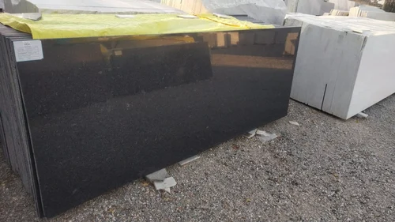

Rajasthan Black Slabs

Description:-
It is a type of granite that is typically used to enhance the interior decorating process.
It has a rich dark color and a rugged texture that gives it a natural look and feel.
R black Granite is typically used to create the look of marble, granite, and other hardwood floors.